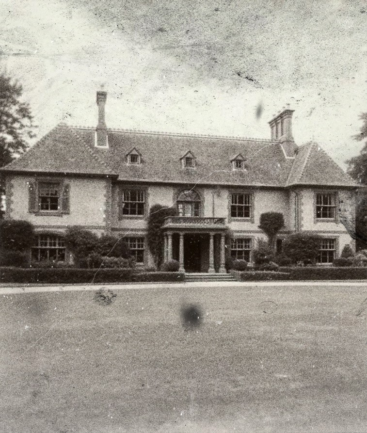
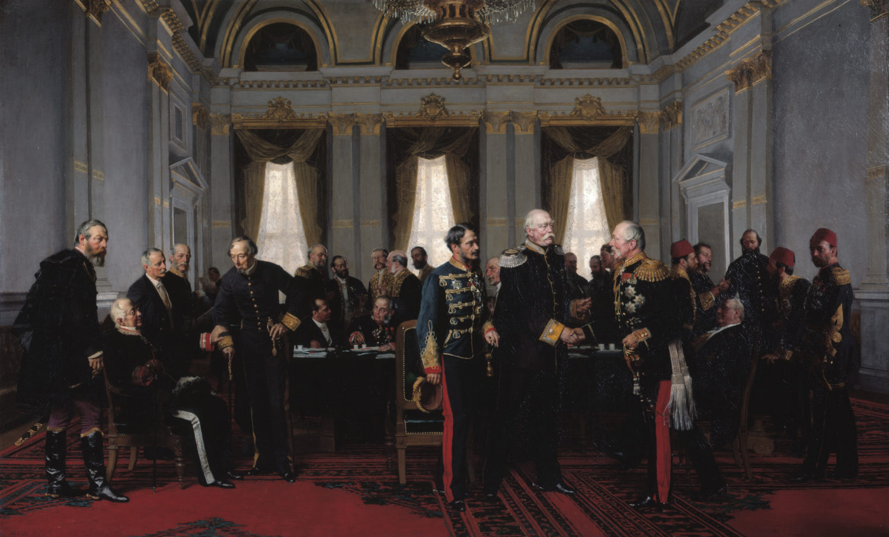

Parliamentary Affairs
"In politics, as in love and in war, one may occasionally cross the floor and change sides — provided one fires with accuracy."
— Sir Stanley Rawlinson, address to the Luton Agricultural Society, 1871
A Seat Among Equals

Stanley, 1877
When Stanley Rawlinson returned to England in December 1857, he was a man transformed — weathered by war and diplomacy, yet eager to bring his worldly acumen home. He settled once more in his beloved Luton, purchasing the handsome estate of Nine Oaks House, and swiftly immersed himself in local civic life.
Fate intervened almost immediately. The death of Sir William Lambert, Member of Parliament for Luton and Aylesbury, from tuberculosis triggered a by-election. Rawlinson, still restless for purpose, sought the Whig nomination and secured the backing of Lord Palmerston, then Prime Minister. Palmerston had long admired Rawlinson's service abroad — particularly his residency in Sevastopol — and recognised in him a kindred hawkishness toward Russia.

Nine Oaks House, c. 1879
In February 1858, Stanley was duly elected to Parliament, only for Palmerston's first government to collapse within days. Thus his first year in Westminster was spent in relative independence — unencumbered by office or whip, and free to exercise his sharp tongue.
Although absent from the historic meeting of 6 June 1859, which formally established the Liberal Party, a surviving letter to Palmerston makes clear that Rawlinson supported the merger of the Whigs, Radicals, and Peelites into the new liberal coalition.
The House Finds Its Voice

Palmerston's letter of support, 1858
When Palmerston returned to power later that year, Stanley remained on the back benches — but quickly proved an invaluable rhetorical weapon. His interventions were seldom numerous, but often devastating. In 1862, when Sir Edward Marshall, the Shadow Colonial Secretary, urged recognition of the Confederate States during the American Civil War, Rawlinson delivered a rebuke that silenced the House:
"Would the honourable gentleman be kind enough to advise this house how much he would personally stand to lose from his own interests in Carolina plantations, and the number of poor wretched souls unfortunate enough to be considered his property would likely be freed, should Mr Lincoln and his associates be successful in their efforts to suppress the uprising?"

Palmerston's letter of support, 1858
The exchange became one of the great parliamentary ripostes of the mid-Victorian age. He followed it with several notable addresses: a rare pro-Russian speech in 1861 praising Tsar Alexander II for the abolition of serfdom; a spirited defence of Danish sovereignty during the Schleswig-Holstein crisis in 1863; and a prescient warning of Bismarck's provocations toward France in 1869, foreseeing the coming clash of empires.
A Milkmaid in the Luggage

Maryka Rawlinson, 1862
Diplomacy, it seems, occasionally offered other rewards. In September 1862, Parliament dispatched a cross-party delegation to Posen (now Poznań, Poland), officially to promote Anglo-Prussian trade but unofficially to probe anti-Prussian sentiment. Among the group was Rawlinson — and, as it happened, his destiny.
At an agricultural fair outside Stary Tomyśl, he met a Silesian milkmaid named Maryka Scholz. By all accounts she was strikingly self-possessed and utterly indifferent to status, two qualities that Stanley found irresistible. She became a frequent presence alongside Stanley for the remaining month of the delegation's visit.
However, when the delegation prepared to return to England, Maryka was conspicuously missing. The mystery was solved, a few days later, by Robert Kingscote MP, who recalled the scene at Dover:
"On our return… Sir Stanley Rawlinson seemed unusually attentive to the porters' handling of part of his luggage. Once it was offloaded, he opened the case in front of us all, and out stepped the slightly ruffled (but otherwise undiminished) young woman whom we all recognised as his paramour from Prussia… Rawlinson simply tipped the dumbfounded excise official five shillings, stated that he 'couldn't abide the paperwork,' and strolled off arm-in-arm with the young lady without a care in the world. I must confess that myself and the honourable member for Shropshire North broke into spontaneous applause."

Letter from Maryka, 1864
Stanley's connections clearly managed to smooth over any immigration issues. And the pair married quietly at St Mary's Church, Luton, in November 1862. Their marriage, though deeply affectionate, was far from conventional. Surviving letters hint at a relationship built on mutual trust and a rather modern tolerance for private amusements. In one, Maryka advised him to "beware of French girls" during a forthcoming trip, while cheerfully noting that she herself would "remain suitably entertained" by a young local aristocrat until his return.
Eight Months of Glory

Vanity Fair caricature, 1868
By 1865, Palmerston's long career was drawing to a close. In one of his final acts, he appointed Rawlinson Secretary of State for the Colonies — his first and only cabinet post. It was a role for which he seemed destined, yet fate once again intervened: Palmerston died that October, leaving Lord Russell to preside over a faltering government that soon collapsed amid electoral reform disputes.
Rawlinson retained his seat, but the Liberals were ousted in June 1866. From the opposition benches he resumed his role as scourge of hypocrisy, supporting the Second Reform Bill — even when it meant siding with Disraeli's Conservatives. His justification was typical of his mixture of conviction and mischief:
"…whilst we should recognise and respect the views of the late Lord Palmerston on this matter, we should also note that the honourable gentleman [Disraeli], whom I otherwise respect, has continued ably to sow divisions within the ranks of the opposition benches, creating fear of station amongst weak-willed Adullamites. I choose to support the government on this bill through no other reason than that it is my belief that all respectable Englishmen, and in time even women, should be allowed a say in the makeup of this house, and be assured the of the accountability of the members herein."
Letters, Wars, and "Ocean-Going Clots"

Open letter to Gladstone, 1870
With Gladstone's Liberal government (1868–74), Rawlinson found himself once again sidelined. Though cordial enough with the Prime Minister, he disdained Gladstone's moralism and pacifism. At the outbreak of the Franco-Prussian War in 1870, he published a blistering open letter, now held in the House of Commons Library, castigating Gladstone for weakness and dismissing Lord Granville, the Foreign Secretary, as "a lumpen poltroon, a mugwump, and an ocean-going clot."
It was political suicide. Between 1870 and 1874, he had the Whip withdrawn no fewer than seven times — a record that stood for decades. Yet his independence only enhanced his reputation as one of the few MPs who placed conscience above party.
Letter to Palmerston supporting the Liberal Party, 1859
The Great Game Resumed
By 1874, Rawlinson's mastery of foreign affairs was once again in demand. Benjamin Disraeli, recognising his expertise and pragmatism dismissed party lines, and invited him to assist with sensitive Eastern negotiations. The following year, Rawlinson accompanied Nathan Rothschild to Cairo and Paris, helping to broker Britain's covert purchase of the Khedive of Egypt's shares in the Suez Canal — a coup that secured Britain's route to India and outmanoeuvred the French.
Then came the Congress of Berlin (1878). Disraeli dispatched Rawlinson to Berlin ahead of the official plenipotentiaries, to negotiate quietly with Otto von Bismarck. His groundwork proved decisive: the resulting Treaty of Berlin undid Russia's Balkan advances, established Austro-Hungarian control over Bosnia, formalised British possession of Cyprus, and recognised the independence of Romania, Serbia, and Montenegro.
It was, for Rawlinson, a triumph. Yet the diplomatic rearrangements that delighted him in 1878 would, in time, sow the seeds of the First World War — and the very incident which would one day claim his own life.

Berlin Congress
The Afghan Epilogue
When Russia turned its gaze once more toward Central Asia, Disraeli again sought Rawlinson's counsel. Ever the pragmatist, Stanley urged diplomacy with the Amir of Afghanistan. Unfortunately, Lord Lytton, the Viceroy of India, acted precipitously, issuing an ultimatum that plunged Britain into the Second Anglo-Afghan War (1878–80).
Despite the chaos, Rawlinson's influence was felt in the resulting Treaty of Gandamak (1879), which granted Britain control of Afghan foreign policy. He later opposed the policy of retaining Kandahar, arguing — prophetically — that its return would ensure Afghan goodwill. His advice was vindicated when Gladstone, upon his re-election in 1880, followed it precisely.
Taking the Chiltern Hundreds
By then, Rawlinson's patience for parliamentary procedure had waned. Believing he could no longer adequately serve his constituents, he resigned in September 1879, accepting the nominal post of Crown Steward and Bailiff of the Chiltern Hundreds — the time-honoured means of stepping down from the Commons.
He departed Westminster not in disgrace, but in satisfaction: a maverick who had spoken his mind, served two Prime Ministers of opposing parties, and left behind a trail of anecdotes, bruised egos, and quietly enduring reforms.